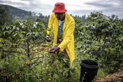

Welcome to Green Hills Coffee Plantation
Green Hills Coffee Plantation is a premier destination showcasing rich coffee farming, scenic views, and quality production processes.

Learn About Coffee
Contact the Plantation
Coffee Varieties
- Arabica
- Robusta
- Batian
- Ruiru 11
Coffee Production Stages
- Planting
- Growing and Maintenance
- Harvesting
- Processing
- Packaging
Plantation Activities
- Pruning
- Cutting back overgrown branches to encourage healthy growth and higher yields.
- Harvesting
- Picking ripe coffee cherries by hand or machine.
- Drying
- Reducing moisture content in the coffee beans before milling.